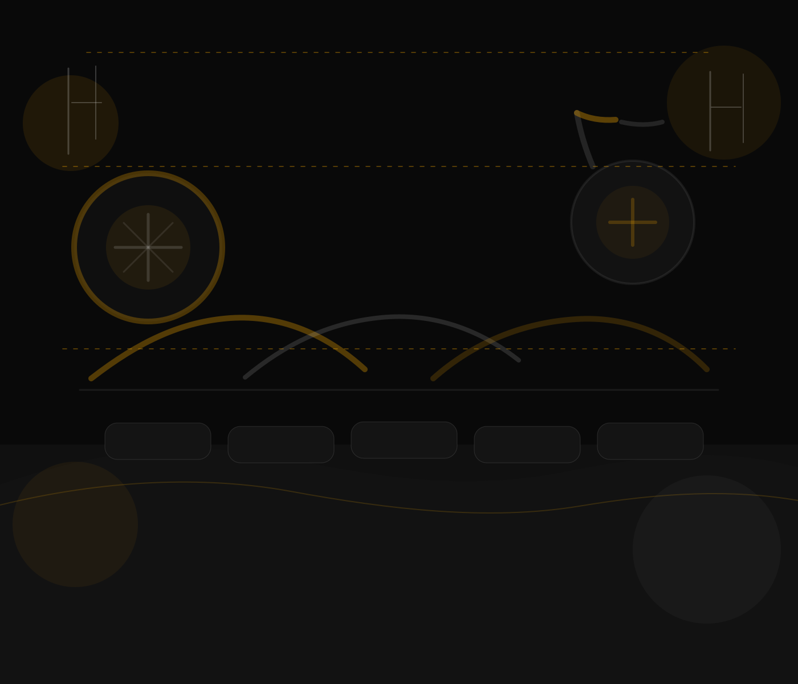

Story
A calm corner for coffee, conversation, and long views.
Cafe Y Ruedas sits on Victoria Street in Intramuros, facing the open greens of the golf course. Public features describe breezy alfresco seating, warm evening lights, and a quiet, comfortable interior that works for a lingering meal or a slow coffee break.
The cafe's vibe stays rooted in the walled city: historic surroundings outside, comfort food and coffee inside, with just enough space to breathe between both.
Verified location: Intramuros, Manila, not a Palawan branch.
